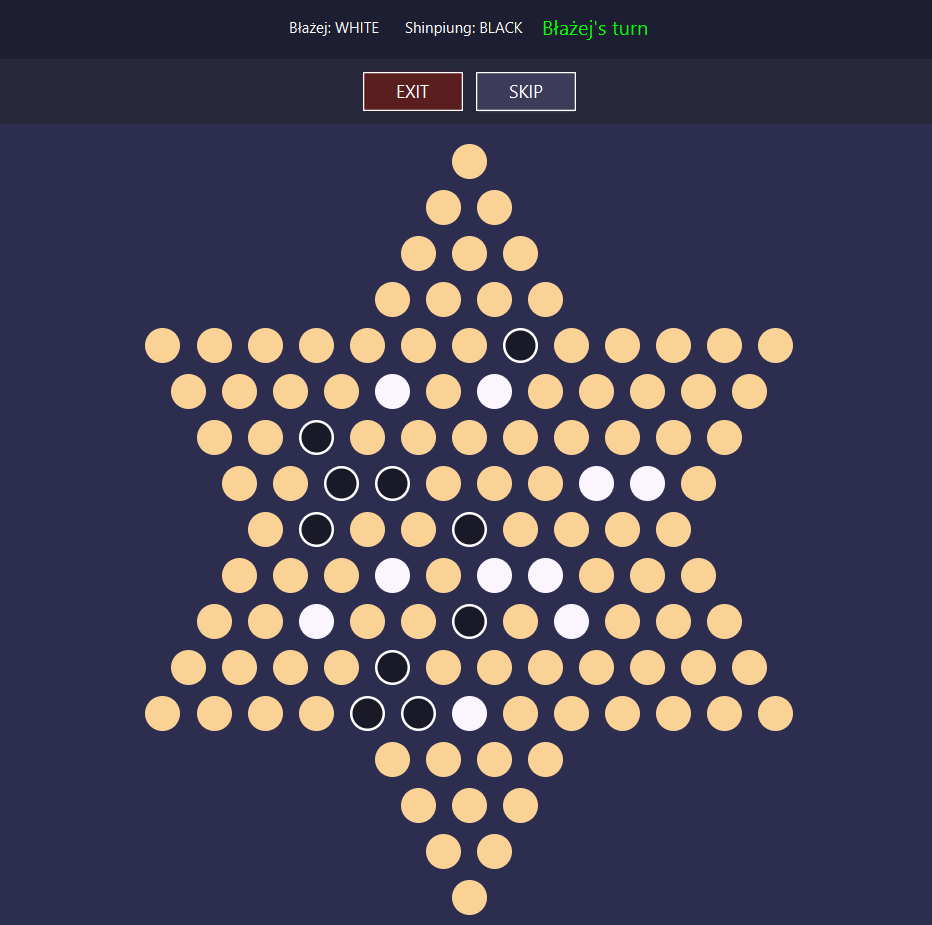

Moje projekty
Trylma - chińskie warcaby

Komputerowa implementacja chińskiej wersji popularnych warcabów.
Zagrać można w 2 wersje gry - klasyczna i order out of chaos, w 2, 3, 4 lub 6 osób, a także można sprawdzić swoje umiejętności przeciwko komputerowi.
Aplikacja stworzona w formacie klient-serwer. Na kilku serwerach rozgrywane są różne gry. Gracz z poziomu aplikacji może dołączyć do wybranego pokoju i grać w Trylmę.
Możliwość odtwarzania poprzednich gier i analizowania swoich zagrań.
Aplikacja pisana w języku Java, korzystając z JavyFX do interfejsu graficznego graczy oraz Springa do przechowywania poprzednich gier od otworzenia.
SzopDB - symulacja sklepu internetowego

Aplikacja będąca symulacją odzieżowego sklepu internetowego.
Aplikacja jest przeznaczona zarówno dla klientów sklepu, jak i sprzedawców i magazynierów. Klienci mogą przeglądać i zamawiać produkty. Mają również możliwość przeglądania swoich wcześniejszych zamówień. Sprzedawcy zajmują się dodawaniem i edycją produktów, natomiast magazynierzy poza obsługą dostaw do magazynu, kompletują również zamówienia klientów oraz rozpatrują zwroty.
Większość operacji wykonywana jest poprzez procedury w bazie danych, co zapobiega SQL Injection.
Aplikacja pisana w jęzku Java, korzystając z JavyFX do interfejsu graficznego użytkowników oraz Springa do połączenia z bazą danych, postawionej na serwerze MariaDB.
Aplikacja do raportów

Aplikacja dla lokalnej piekarni, usprawniająca proces kontroli wydawanych produktów.
W aplikacji można tworzyć raporty dotyczące wydawanego pieczywa, generować podsumowania raportów filtrowane przez datę i/lub produkt do plików Excela. Aplikacja pozwala również na zarządzanie bazą danych pracowników czy produktów.
Aplikacja pisana w języku Java, korzystając z JavyFX do interfejsu graficznego użytkowników oraz Springa do połączenia z bazą danych.